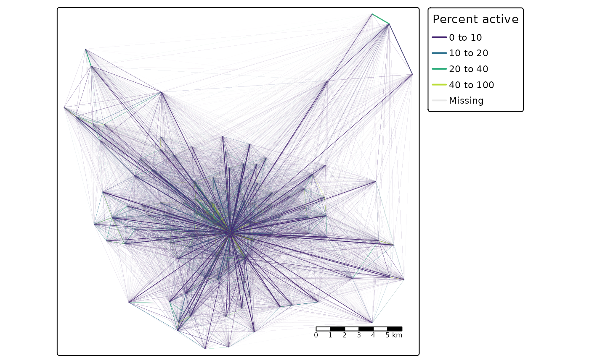

Validation of 2011 OD data for Leeds, UK
The input datasets for this example are as follows:
- Geographic boundary and centroid data from the {pct} package, trip representing origins and destinations
- Origin-destination data representing trips to work from the 2011 Census
- Explanatory variables associated with zones, tbc
The key input datasets are shown below
si_od_census
#> # A tibble: 10,536 × 18
#> O D all from_home light_rail train bus taxi motorbike car_driver
#> <chr> <chr> <dbl> <dbl> <dbl> <dbl> <dbl> <dbl> <dbl> <dbl>
#> 1 E020… E020… 66 0 0 0 0 0 1 29
#> 2 E020… E020… 742 0 0 1 5 1 1 426
#> 3 E020… E020… 2 0 0 0 0 0 0 2
#> 4 E020… E020… 9 0 0 0 0 0 0 6
#> 5 E020… E020… 50 0 0 0 3 1 0 43
#> 6 E020… E020… 23 0 0 0 0 0 0 20
#> 7 E020… E020… 4 0 0 0 0 0 0 4
#> 8 E020… E020… 2 0 0 0 0 0 0 2
#> 9 E020… E020… 1 0 0 0 0 0 0 1
#> 10 E020… E020… 3 0 0 0 0 0 0 3
#> # … with 10,526 more rows, and 8 more variables: car_passenger <dbl>,
#> # bicycle <dbl>, foot <dbl>, other <dbl>, geo_name1 <chr>, geo_name2 <chr>,
#> # la_1 <chr>, la_2 <chr>
plot(si_zones$geometry)
plot(si_centroids$geometry, add = TRUE)
od_from_si = si_to_od(origins = si_centroids, destinations = si_centroids)
nrow(si_od_census) / nrow(od_from_si)
#> [1] 0.920255The output shows that more than 90% of all possible combinations of OD pairs going from and to every zone are present in the validation dataset. The maximum number of unique OD pairs for a given OD dataset is the number of origins multiplied by the number of destinations. In this case that is 107 * 107 which is 1.144910^{4} Before proceeding it’s worth doing some sanity checks to find out:
- What does the spatial distribution of travel to work in Leeds look like?
- Which OD pairs that are
si_od_census_sf = si_od_census %>%
od_to_sf(si_centroids) %>%
mutate(all, `Percent active` = (bicycle + foot) / all * 100)
#> 0 origins with no match in zone ids
#> 0 destinations with no match in zone ids
#> points not in od data removed.
si_od_census_sf %>%
arrange(`Percent active`) %>%
tm_shape() +
tm_lines(col = "Percent active", lwd = "all", scale = 3, palette = "viridis",
breaks = c(0, 0.1, 0.2, 0.4, 1) * 100, legend.lwd.show = FALSE) +
tm_scale_bar()
The figure above clearly shows that Leeds is a monocentric city with relatively high levels of active travel near the centre but with low levels of active travel in the outskirts. From that we can predict the ~8% of OD pairs that are not in the dataset: long distance OD pairs avoiding the centre. Let’s find out:
od_pairs_with_no_travel = od_from_si %>%
filter(!paste(O, D) %in% paste(si_od_census$O, si_od_census$D))
summary(od_pairs_with_no_travel$distance_euclidean)
#> Min. 1st Qu. Median Mean 3rd Qu. Max.
#> 3362 9407 12881 13555 17598 27761
summary(sf::st_length(si_od_census_sf))
#> Min. 1st Qu. Median Mean 3rd Qu. Max.
#> 0 5042 8091 8795 11751 26698As expected, the mean length of OD pairs in the observed Census is substantially less, and that’s before calculating the weighted mean, which is just over 5 km:
weighted.mean(sf::st_length(si_od_census_sf), w = si_od_census_sf$all)
#> 5258.856 [m]In any case, let’s proceed to some estimates of travel.
The very simplest model we could imagine to simulate movement between zones in the city, given knowledge of how many people travel to work between and within the zones of Leeds in total (236k), is to divide that movement equally between each OD pair. In that case we would have:
Plotting this against the observed number of trips from the census data shows that, as we would expect, there is no correlation between this simplistic non-model and reality:
od_joined = left_join(od_from_si, si_od_census) %>%
mutate(all = case_when(is.na(all) ~ 0, TRUE ~ all))
#> Joining, by = c("O", "D")
od_joined %>%
ggplot(aes(all, flow_equal)) +
geom_point()
So, how can we do better? Although the classic gravity model is often presented as the most type, we can actually go a step simpler than that, using linear and exponential decay to approximate travel, without any attention paid to the population in each zone or any other factor. So let’s get stuck in and fit some models!
total = sum(si_od_census$all)
m1 = lm(all ~ distance_euclidean, data = od_joined)
od_joined = si_predict(od_joined, model = m1, constraint_total = total, output_col = "flow_m1")
#> Negative values in output, setting them to zero
od_joined %>%
ggplot(aes(distance_euclidean, flow_m1)) +
geom_point()
od_joined %>%
ggplot(aes(all, flow_m1)) +
geom_point()
sum(od_joined$flow_m1) == sum(od_joined$all, na.rm = TRUE)
#> [1] TRUE
cor(od_joined$all, od_joined$flow_m1, use = "complete.obs")^2
#> [1] 0.07686445The simple linear model implemented in the code chunk above predicts flow solely on the basis of distance between OD pairs. The results are slightly better than the ‘equal trips for all OD pairs’ approach but still pretty bad, explaining only 7% of the variability observed in all trips between OD pairs in the census dataset. Furthermore, the result also reveals an issue when fitting models to OD datasets: because ‘negative flow’ does not make sense in this contexts, models that can predict negative values should be questioned.
An approach that prevents negative values, that also captures the fact that there is non-linear (near exponential) decay with distance and travel, is SIMs with exponential decay. We can implement such a model as follows:
od_joined = od_joined %>%
mutate(distance_nonzero = case_when(
distance_euclidean == 0 ~ 50,
TRUE ~ distance_euclidean))
m2 = nls(
formula = all ~ a + distance_nonzero^b,
start = list(a = 5, b = -0.8),
data = od_joined
)
#> Error in numericDeriv(form[[3L]], names(ind), env, central = nDcentral): Missing value or an infinity produced when evaluating the modelAs shown in the code above, the model fails to converge. An alternative approach is as follows:
m2 = minpack.lm::nlsLM(
formula = all ~ a + distance_nonzero^b,
start = list(a = 5, b = -0.8),
data = od_joined
)
# m2 = gslnls::gsl_nls(
# all ~ a + distance_nonzero^b,
# start = list(a = 10, b = -0.08),
# # control = gslnls::gsl_nls_control(scale = "more"),
# control = gslnls::gsl_nls_control( solver = "svd"),
# data = od_joined
# )
od_joined = od_joined %>%
si_predict(m2, constraint_total = total, output_col = "flow_m2")
od_joined %>%
ggplot(aes(distance_euclidean, flow_m2)) +
geom_point()
od_joined %>%
ggplot(aes(all, flow_m2)) +
geom_point()
cor(od_joined$all, od_joined$flow_m2, use = "complete.obs")^2
#> [1] 0.1444543We can overcome this using a self starting function:
m3 = nls(
formula = all ~ SSasymp(distance_nonzero, a, b, lrc = log_alpha),
data = od_joined
)
od_joined = od_joined %>%
si_predict(m3, constraint_total = total, output_col = "flow_m3")
od_joined %>%
ggplot(aes(distance_euclidean, flow_m3)) +
geom_point()
od_joined %>%
ggplot(aes(all, flow_m3)) +
geom_point()
cor(od_joined$all, od_joined$flow_m3, use = "complete.obs")^2
#> [1] 0.1441077Another approach is with the minpack.lm package:
We can make this ‘production constrained’ as follows:
od_joined = od_joined %>%
si_predict(m3, constraint_production = origin_all, output_col = "flow_m4")
od_joined %>%
ggplot(aes(distance_euclidean, flow_m4)) +
geom_point()
od_joined %>%
ggplot(aes(all, flow_m4)) +
geom_point()
cor(od_joined$all, od_joined$flow_m4, use = "complete.obs")^2
#> [1] 0.1299208And ‘attraction constrained’ as follows:
od_joined = od_joined %>%
si_predict(m3, constraint_attraction = destination_all, output_col = "flow_m5")
od_joined %>%
ggplot(aes(distance_euclidean, flow_m5)) +
geom_point()
od_joined %>%
ggplot(aes(all, flow_m5)) +
geom_point()
cor(od_joined$all, od_joined$flow_m5, use = "complete.obs")^2
#> [1] 0.6217939